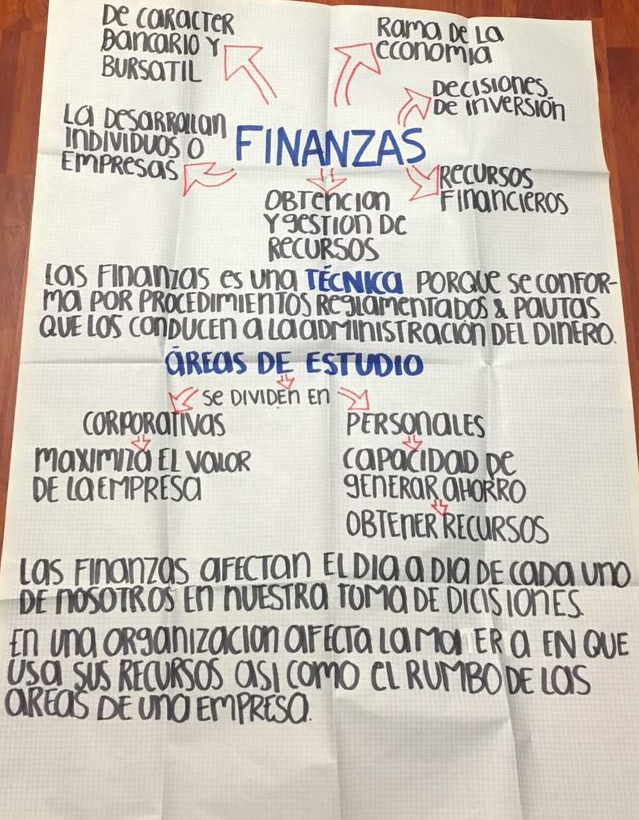

1.1 ¿Qué son las finanzas?
Las finanzas son el conjunto de conocimientos y procedimientos que implementan las organizaciones y los individuos que colaboran en ella para poder reunir, destinar y utilizar los recursos monetarios o financieros disponibles y de ver su retribución a través del tiempo, con la elaboración y realización de proyectos que permitan el real uso de todos aquellos recursos y así asegurar buenos niveles de rentabilidad que beneficie a todos los que participan en las actividades de la organización.
Las finanzas son una TÉCNICA porque siguen un conjunto de procesos bien estructurados con los cuales se busca llegar a un objetivo, y en este caso las finanzas se basan en el uso de diferente procesos con lo cual se busca llegar a la optimización de los recursos de una empresa y/o persona.
1.1.1 Las Finanzas y la Estructura Organizacional de la Empresa Relación del área de finanzas con las demás en una empresa
Entre la tesorería y la contraloría existe un estrecha relación, debido a que el tesorero en una organización debe presentar sus informes o reportes a su jefe inmediato que es el contralor y a su vez los presentará a sus superiores. Así como todos los departamentos de la empresa como puede ser: el departamento de crédito y cobranzas, compras, nóminas, el departamento de producción, etc.
No todas las empresas tienen un departamento de contraloría, esto depende del tamaño de la empresa, por lo tanto, lo tienen combinado con tesorería o bien únicamente existe el puesto de tesorería.
1.1.2 Organización del Área Organigrama Áreas del organigrama
TESORERÍA: La tesorería es la que se encarga más directamente de los movimientos reales del dinero que entra y sale de la empresa, y aglutina todas esas gestiones necesarias para conseguir dinero, fuentes de financiación como los descuentos comerciales, factoring, préstamos bancarios, etc. Además, se encarga de almacenar todos los soportes de las transacciones, incluyendo la emisión diaria de la información sobre los fondos de la empresa, y es el área encargada de aplicar todo ese conjunto de medidas y los procesos administrativos que permiten prevenir los errores en cuanto al manejo de efectivo, la caja y bancos.
Es de suma importancia en una empresa el departamento de tesorería, debido a que toda empresa, requiere de recursos financieros para seguir adelante. Una empresa que no tenga suficientes fondos financieros no podrá subsistir, por lo tanto, es importante una estructura financiera debidamente organizada para la obtención de recursos y así poder seguir adelante en el mercado, coordinar y asignar fondos a los departamentos de la empresa que así lo requieran y necesiten.
CONTRALORÍA: Contraloría es la actividad encargada de la planeación para el control, información financiera, evaluación y deliberación, administración de impuestos, informes al gobierno, coordinación de la auditoría externa, protección de los activos de la empresa y la evaluación económica. EL objetivo principal es alcanzar el crecimiento sano y continuo de la empresa, basado esto en una buena planeación a largo plazo y en decisiones acertadas sobre proyectos alternativos de inversión. .
1.2.3 Importancia del manejo de la información financiera ¿Cómo afectan las finanzas la vida de las personas y organizaciones?
Las finanzas son una disciplina que afecta la vida de cada persona u organización, ya que todos los individuos ganan o perciben dinero, y lo gastan o lo invierten. Así pues si cada persona u instituciones, mercados e instrumentos mediante los cuales se rige la circulación del dinero entre las personas, las empresas y los gobiernos.
EVIDENCIA: APUNTE 1 1.2 ESTADOS FINANCIEROS
1.2.1 BALANCE GENERAL
El Estado de Situación Financiera o Balance General es el estado financiero aplicable a cualquier entidad, que muestra en unidades monetarias y, a una fecha determinada, sus recursos, deudas y patrimonio.
Los elementos que integran el Balance General son: los recursos, las deudas y el patrimonio de la entidad cuya situación financiera se presenta en el mismo. Los elementos que anteriores tienen, dentro de la técnica contable, una terminología definida, y así tenemos que:
Recursos = ACTIVO
Deudas = PASIVO
Patrimonio = CAPITAL
Se entiende por el término “Activo”, el conjunto de recursos (bienes, derechos y servicios) propiedad de una entidad.
El término “PAsivo” representa el conjunto de obligaciones (deudas) de una entidad, a favor de personas ajenas a ella, quies le proporcionaron recursos en calidad de préstamo.
El término “Capital” significa el patrimonio con que los propietarios han dotado a una entidad para iniciar y continuar sus operaciones.
Por lo tanto podemos concluir que el Balance General es: EL ESTADO FINANCIERO APLICABLE A CUALQUIER ENTIDAD QUE MUESTRA EN UNIDADES MONETARIAS Y, A UNA FECHA DETERMINADA, SU ACTIVO, PASIVO Y CAPITAL.
El término “Pasivo” representa el conjunto de obligaciones (deudas) de una entidad, a favor de personas ajenas a ella, quies le proporcionaron recursos en calidad de préstamo.
El término “Capital” significa el patrimonio con que los propietarios han dotado a una entidad para iniciar y continuar sus operaciones.
Si la totalidad del activo proviene de las dos fuentes de financiamiento de que dispone la empresa: el Pasivo y el Capital Contable, puede comprenderse que:
ACTIVO = PASIVO + CAPITAL CONTABLE A = P + CC
De la ecuación anterior, al sustituirse los términos, se tiene dos igualdades más:
PASIVO = ACTIVO - CAPITAL CONTABLE P = A - CC
CAPITAL CONTABLE = ACTIVO - PASIVO CC = A - P
Esta ecuación justifica el hecho de haber denominado a este estado financiero como “Balance General”, ya que este documento siempre mostrará un equilibrio entre el total de su Activo y la suma de su Pasivo y Capital Contable.
Por ser presentado siempre a un fecha determinada, al balance se le ha dado el calificativo de estado financiero “estático”, pues cualquier operación que se registra en la entidad y afecte a cualquiera de sus elementos, modificará un equilibrio entre el total de su Activo y la suma de su Pasivo y Capital Contable.
Elementos esenciales del Balance:
- Los recursos: Son todos los bienes y derechos propiedad de una entidad
- Las obligaciones: Son todas las deudas que tiene la entidad
- El patrimonio: Es la diferencia entre los recursos y las obligaciones.
- Encabezado
- Razón o denominación social de la entidad
- Indicación de que se trata de un Balance General
- Fecha a la que corresponde el Balance.
Nombre y valor detallado de cada una de las cuentas que forman el Activo Nombre y valor detallado de cada una de las cuentas que forman el Pasivo Nombre de las cuentas y valor del capital Contable
PieEn esta parte van las firmas de las personas que intervienen en:
- Su elaboración
- Revisión
- Autorización
Es también indispensable considerar al pie, la leyenda de que las notas que se acompañan en hojas por separado son parte integrante del Balance.
Formas de presentar el Balance:- En forma de reporte
- En forma de cuenta
Esta forma de presentar el balance, corresponde a lo que conocemos Capital A - P = C, donde se presentan en forma vertical en una sola hoja, de tal forma que importe del Activo el importe del Pasivo y obtener por diferencia el capital contable.
En forma de cuenta:Esta representación tiene como fundamento la ecuación contable básica. Activo = Pasivo + Capital. La distribución de los elementos del Balance, bajo esta forma, presenta, del lado izquierdo del formato, a todas las cuentas que conforman el Activo de la entidad y, en el lado derecho, las cuentas que integran su Pasivo y Capital.

1.2.2 ESTADO DE RESULTADOS
El estado de resultados es uno de los estados financieros básicos para las entidades lucrativas. Su importancia reside en que muestra la información relativa al resultado de las operaciones en un periodo contable y, por ende, los ingresos y gastos de dichas entidades, así como, su utilidad o pérdida neta, permitiendo evaluar los logros alcanzados con los esfuerzos desarrollados durante el periodo consignado en el mismo estado.
El estado de resultados debe reunir las características primarias de confiabilidad, relevancia, comprensibilidad y comparabilidad para que éste sea útil para la toma de decisiones por parte de sus usuarios gerenciales.
Los elementos que integran el estado de resultados son:
- A. Los egresos
- B. Los ingresos
Se entiende por el término “ingresos”, cualquier operación practicada por la entidad cuyos efectos aumentan al capital contable, es decir, se tipifican como tales, todas las operaciones que generan productos y, consecuentemente, utilidades.
El término “egresos” significa disminuciones del capital contable de una entidad, originando por sus operaciones realizadas. De acuerdo con lo anterior, se entiende que serán egresos aquéllas operaciones que generen costos y gastos que provocarían pérdidas para la entidad, y que por éstas, su patrimonio se vea disminuido.
Los rubros considerados como ingresos de una identidad son:
- Las ventas
- Los productos financieros
- Otros productos
De la misma manera, los apartados conceptuados como egresos, son:
- El costo de ventas
- Los gastos de ventas
- Los gastos de administración
- Los gastos financieros
- Otros gastos
La elaboración del estado de resultados en forma analítica, puede efectuarse siguiendo una serie de fórmulas establecidas, las cuales son:
- VENTAS NETAS: Ventas Totales menos Devoluciones y Rebajas sobre Ventas
- COMPRAS TOTALES: Compras más Gastos de Compras
- COMPRAS NETAS: Compras Totales menos Devoluciones y Rebajas sobre Compras
- COSTO DE VENTAS: Compras Netas más INventario Inicial, menos Inventario Final
- UTILIDAD BRUTA: Ventas Netas menos Costo de Ventas
- UTILIDAD O PÉRDIDA EN OPERACIÓN: Utilidad Bruta menos los gastos de Operación
- UTILIDAD DESPUÉS DE GASTOS Y PRODUCTOS FINANCIEROS: Utilidad o Pérdida en Operación, más o menos la diferencia entre Gastos y Productos Financieros.
- UTILIDAD ANTES DE IMPUESTOS: Utilidad o Pérdida después de Gastos y Productos Financieros, más o menos la diferencia entre Otros Gastos y los Otros Productos
Presentación del Estado de Resultados
Al igual que el Estado de Situación Financiera, el Estado de Resultados tiene una presentación definida, la cual puede ser analítica o condensada. La primera, contempla en detalle a todos los elementos u operaciones que intervinieron en un periodo determinado para obtener la utilidad o pérdida que ahí se muestra; la segunda, en cambio, muestra de manera breve las operaciones principales que originaron el resultado ahí presentado.
1.2.3 Depreciaciones y Amortizaciones
DEPRECIACIÓN
La depreciación es el mecanismo mediante el cual se reconoce el desgaste que sufre un bien por el uso que se haga de el. Cuando un activo es utilizado para generar ingresos, este sufre un desgaste normal durante su vida útil que el final lo lleva a ser inutilizable. El ingreso generado por el activo usado, se le debe incorporar el gasto correspondiente desgaste que ese activo a sufrido para poder generar el ingreso, puesto que como según señala un elemental principio económico, no puede haber ingreso sin haber incurrido en un gasto, y el desgaste de un activo por su uso, es uno de los gastos que al final permiten generar un determinado ingreso.
Al utilizar un activo, este con el tiempo se hace necesario reemplazarlo, y reemplazarlo genera un derogación, la que no puede ser cargada a los ingresos del periodo en que se reemplace el activo, puesto que ese activo genero ingresos y significo un gasto en mas de un periodo, por lo que mediante la depreciación se distribuye en varios periodos el gasto inherente al uso del activo, de esta forma sol se imputan a los ingresos los gastos en que efectivamente se incurrieron para generarlo en sus respectivos periodos.
Otra connotación que tiene la depreciación, vista desde el punto de vista financiero y económico, consiste en que, al reconocer el desgaste del activo por su uso, se va creando una especie de provisión o de reserva que al final permite ser reemplazado sin afectar la liquidez y el capital de trabajo de la empresa. Es de aclarar que todos los activos fijos son objeto de depreciación, a excepción de los terrenos, puesto que se supone que estos no se desgasta por el uso, por lo que en el caso de las construcciones y edificaciones, antes de proceder a depreciarlos, se debe primero excluir el valor del terreno sobre el que esta la construcción
AMORTIZACIÓN
La amortización financiera es el reintegro de un capital propio o ajeno, habitualmente distribuyendo pagos en el tiempo. Suele ser el producto de una prestación única, que genera una contraprestación múltiple con vencimiento posterior. Es común que el pago de estas obligaciones se haga a través de desembolsos escalonados en el tiempo, aunque también se puede acordar un solo pago al final del período. Un ejemplo típico de amortización es el pago o amortización de un préstamo.
Los sistemas o métodos de amortización son diversos. La elección de uno u otro, aunque usualmente lo propone la entidad financiera, afectará al importe y la composición de las cuotas periódicas que tendrá que abonar el prestatario, ya que la amortización del préstamo se corresponde con la cantidad que se va devolviendo del capital prestado. En el importe o cuota se integran tanto el capital o principal amortizado como los intereses.
A este respecto, se distinguen principalmente, cuatro sistemas o métodos de amortización:
1. El método de amortización francés o de cuotas constantes
2. El método de amortización americano o al vencimiento
3. El método de amortización constante de capital o italiano
4. El método de amortización de cuotas crecientes